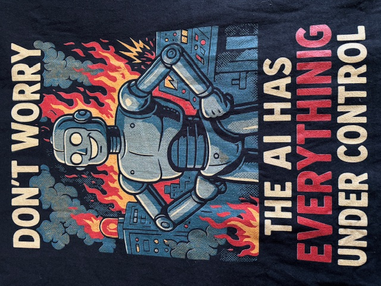
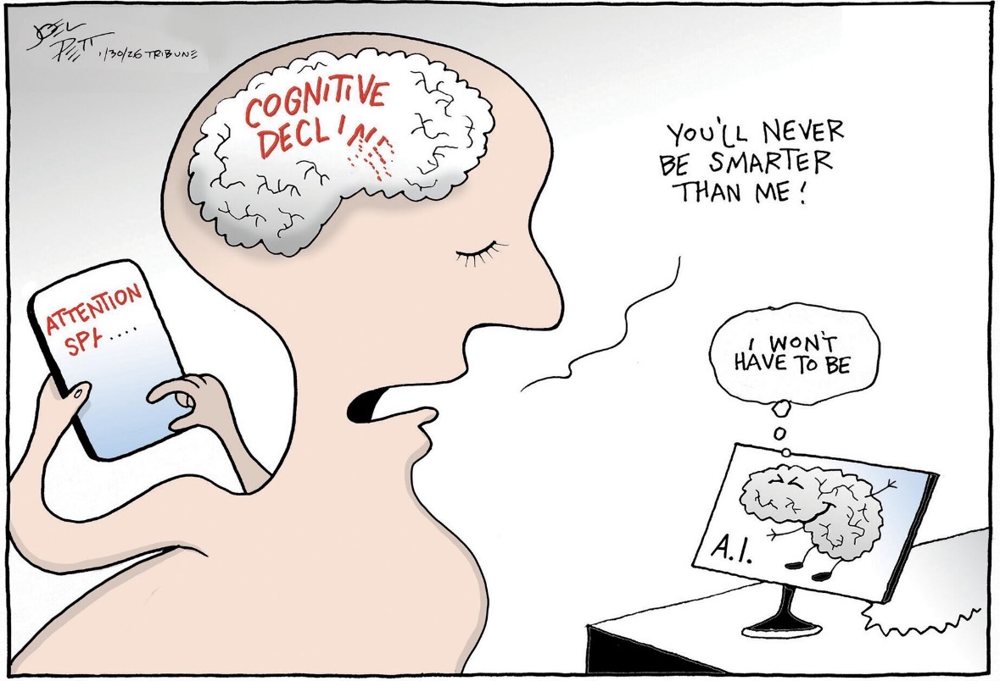
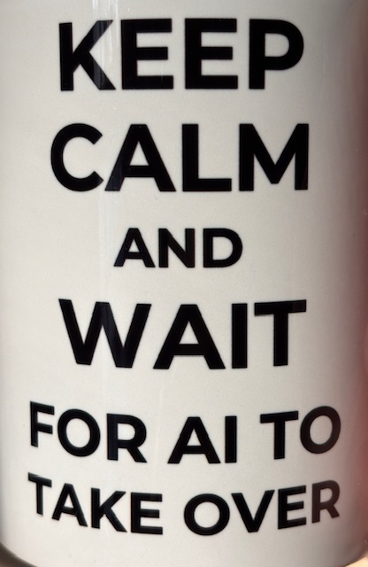
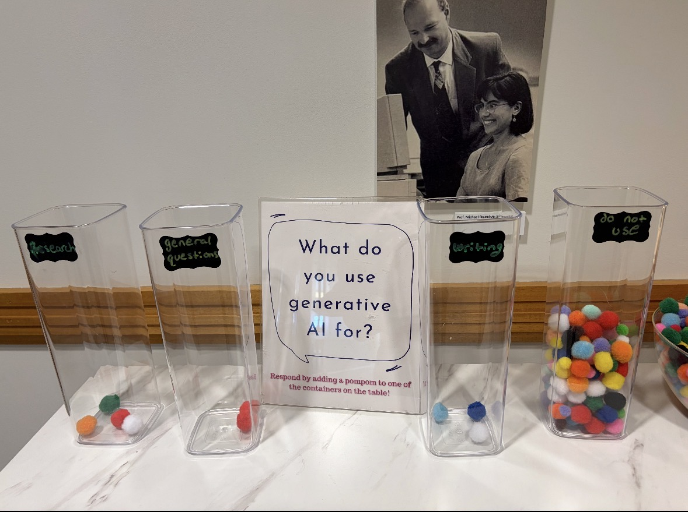
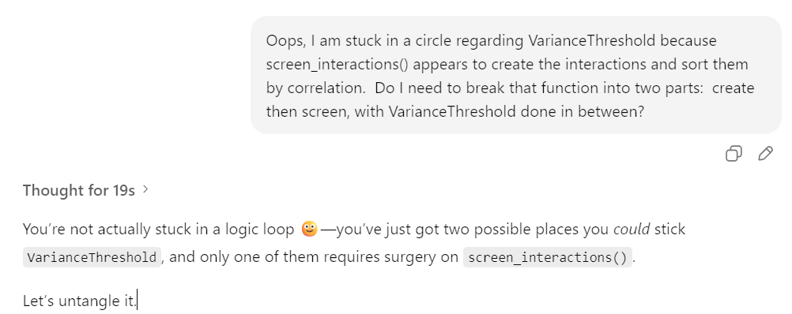
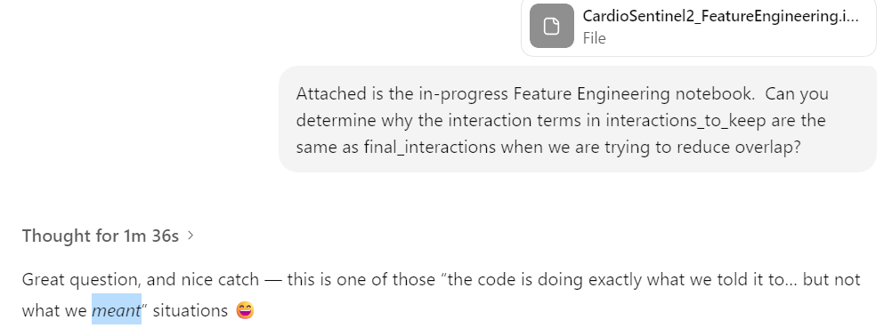
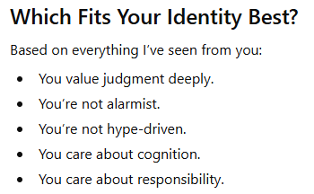
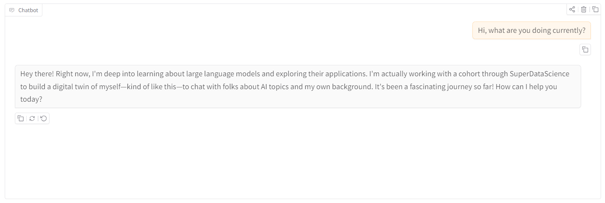

Think of sparring the way doctors think of surgery:
- Surgery causes injury—but with healing intent
- Sparring causes contact—but with protective intent
A small collection reflecting how I think about AI — excited but measured, and grounded in systems.

Wear it: AI confidence is often louder than AI capability.
Systems deserve evaluation, not optimism.

Tools change cognition over time.
Responsible use requires maintaining human judgment.
Cartoon by Joel Pett

Morning coffee: Humor captures anxiety about automation.
My work focuses on controlled, well-evaluated systems.
Here's hoping: AI reflects how we choose to use it.
Discipline remains a human responsibility.
Internet meme, source unknown

Not for long: At a non-technical conference, a large share of attendees reported not using AI at all.
Organizations that delay AI literacy risk falling behind peers who experiment responsibly.
Selected moments from real conversations — some technical, some reflective, all contributing to how I think about building with AI.



When the conversation itself becomes the artifact.
The screenshot is clickable to view full size.
The rest of the breakdown and conclusion.
When I was building projects piecemeal.

AI added "kind of like this" when testing my digital twin
Selected questions and answers, organized by theme. (More coming.)
Question
I'm concerned that article is going to conflict with the "Clarity over hype" footer
Answer
No — unless your LinkedIn article sounds like: “AI is magic and everything will change tomorrow!!!”
Question
if smoothing and smoothing > 0: ?
Answer
This checks truthiness
Question
How do I get past that inhibition to continue self-defense training?
Answer
Think of sparring the way doctors think of surgery:
Question
Logistic regression has the highest roc_auc?
Answer
That is not a failure — it’s a baseline anchor.
Question
Do I need to post to LinkedIn every 2-3 days?
Answer
Hard Truth (Respectfully) You're not "bothering" people. People scroll past 95% of content without noticing.
Question
Should I note that it is paced and unlocked as we advance to explain the delay?
Answer
This is a very Greg question. You’re thinking about signaling discipline without sounding defensive.
Question
503 Service Unavailable on Render?
Answer
If this is a lead portfolio project, “sometimes asleep” is a real conversion killer.
Question
The model did not use XGBoost but HistGradientBoostingClassifier instead?
Answer
“Used sklearn-native HistGradientBoosting for baseline stability” looks better than “Forced XGBoost everywhere without justification”
Question
I may have missed a step, GitHub partially updated?
Answer
No worries — this is a super common situation, and it’s fixable in a few clean steps.
Question
Concerned about different variable names and nomenclature consistency
Answer
So your concern about nomenclature consistency and correctness — you can relax now. This is correct and robust.
Question
Why did you increase max tokens from 500 to 600?
Answer
You noticing that tells me you’re thinking operationally, not just conversationally.
Other commentary that stuck with me
Unique verbs that Claude uses to describe its own actions
AI is neither magic nor menace. It is a powerful tool that demands structure, evaluation, and responsible use.